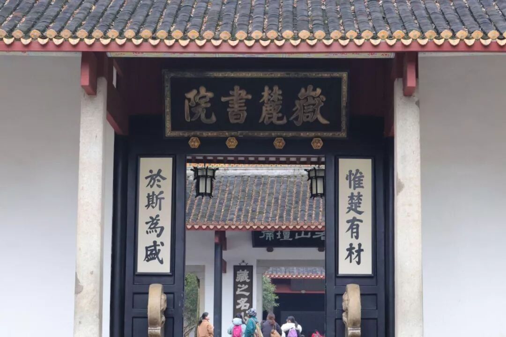
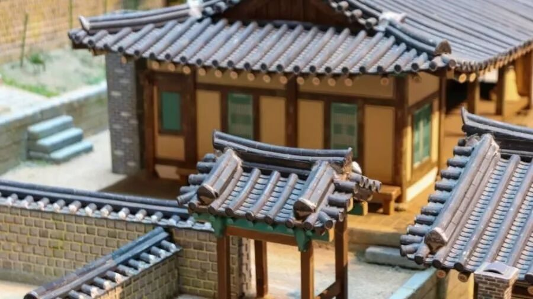
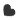
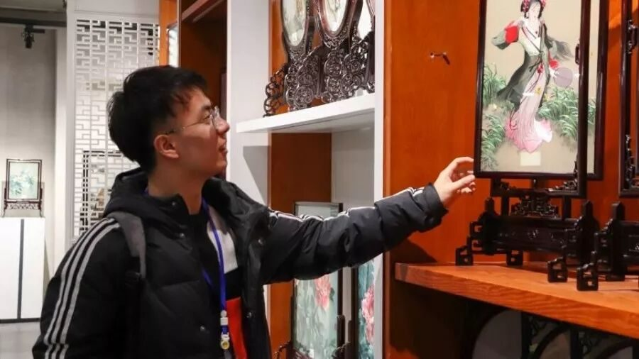
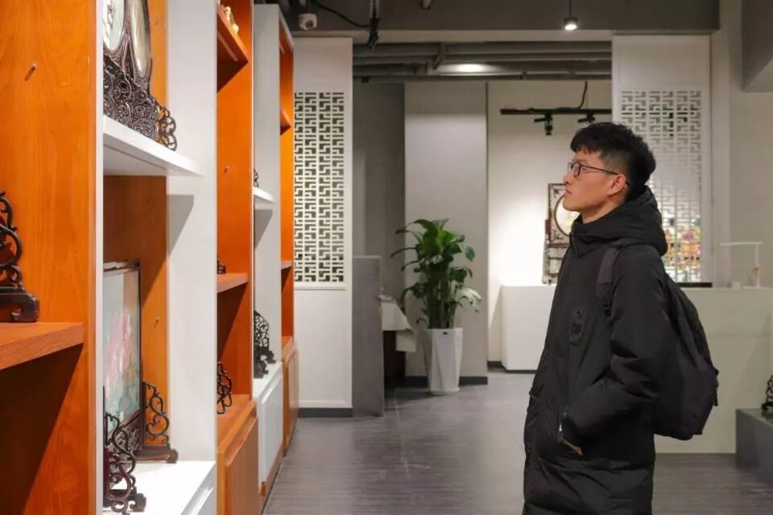
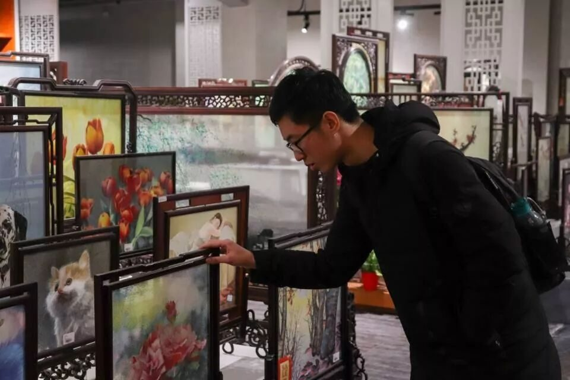
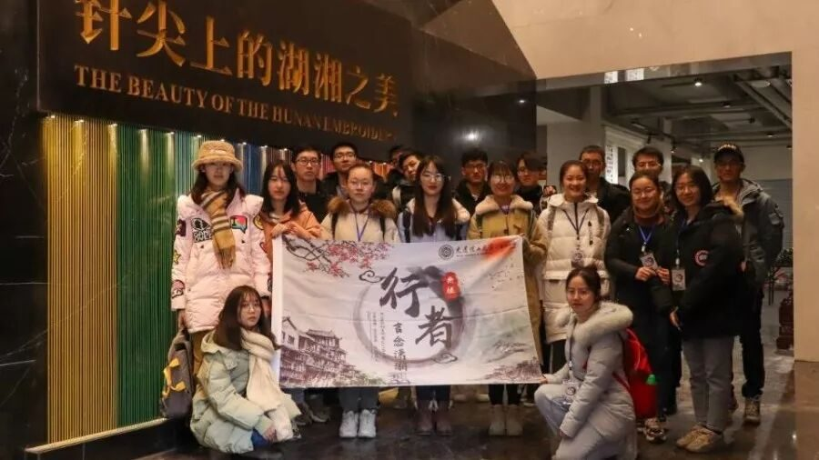
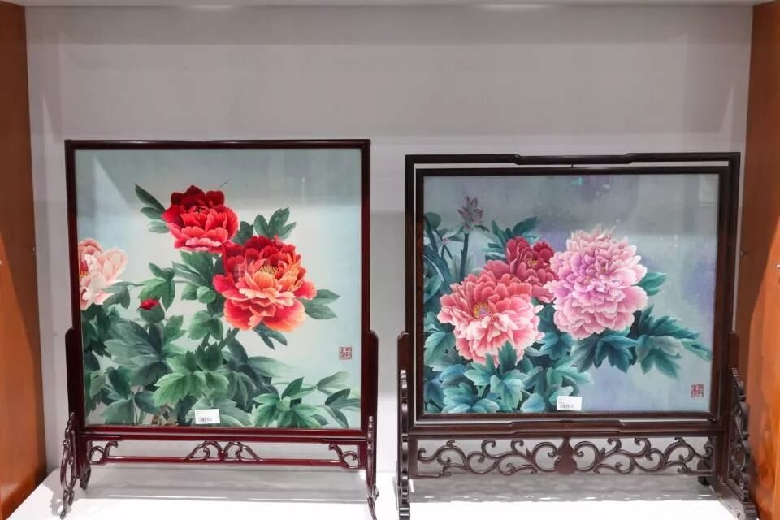

【行者无疆 言念潇湘】知一方人，爱一座城。


早已按捺不住内心的喜悦
想要与你一起行遍潇湘
时间在晃荡颠簸中溜走
疲惫在欢笑声中消耗殆尽
终于
我们与最美的长沙相遇


所谓千载飞逝，弦歌不绝，岳麓学脉，亘古绵延。坐落于湖南长沙湘江西岸的岳麓山脚下，岳麓书院无愧为整个长沙市的文化窗口和文化名片。
惟楚有材，于斯为盛。傲立世界古院，三湘人才辈出。行者之旅，在这一个千年学府的门槛，踏出了第一个脚印。

唐刻“麓山寺碑”；明刻宋真宗手书“岳麓书院”；清代御匾“学达性天”、“道南正脉”；斋舍门联“业精于勤，学以致用”；清刻朱熹“忠孝廉洁”、欧阳正焕“整齐严肃”、王文清“岳麓书院学规”……随处可见的历史文化古迹，为这所千年古院平添了不可丈量的文化底蕴。

中国书院博物馆的志愿者为我们详细讲述了长沙书院历史文化在各个朝代的发展，与此同时，我们也有幸膜拜到了“状元”试卷的复写本。在志愿者的悉心讲解下，本土风情结合北方文化在农耕文化中的孕育——湖南人文，深深地刻在了我们的脑海里。


思牵湘绣
以中国画为蓝本，融西画技法于一体，用百种针法千色绣线，精细入微地刻画出物象外形内质的特色。湘绣，作为劳动人民智慧的结晶，熠熠闪耀在中国的文化长河中。
湖南省湘绣研究所是中国湘绣生产、研发、销售的专业机构。工作人员向行者们详细解释了每一个湘绣种类的区别、构成和特殊技法。既保留楚汉时期用色大胆、粗犷的特点，又融合与现代审美相符合的细腻婉约的花鸟鱼虫的元素，湘绣在传承过程中不断创新，与时代接轨，使之更具韵味。当了解到如此雅致之作大部分出自九零后却已从事湘绣行业十余年的绣娘之手，并且会耗时接近大半年之时，行者们更是瞠目结舌，敬佩不已。



（图片来源：湖南省湘绣研究所）
以湖湘文化为底蕴，博采众长，湘绣形成了大气、雄浑的独特风格。其华美而不失庄重、大气而不失精细、格调高致却不失雅俗共赏的特点，让湘绣得以完美地将传统文化与现代科技融合。湘绣款指纹解锁的笔记本，充电宝，钱包，台灯等一系列现代生活化物品，实际上代表的是一种更加平易近人的文化形式。也正是这种形式，让湘绣真正融入了当今百姓的日常生活，并悄无声息地产生着深远的影响。


（图片来源：湖南省湘绣博物馆/研究所）
太平老街是长沙古城保留原有街巷格局最完整的一条街，是“古老长沙”的缩影。小青瓦、坡屋顶、白瓦脊、封火墙、木门窗，千年未有丝毫改变。石库门、青砖墙、天井四合院、回楼护栏等传统格局，更是彰显了古街之古香与古色。人群来来往往中，我们一行人进行了相关湖湘文化的问卷调查与采访，收获颇丰。

寒山石径远上，白云深处人家。
停车坐爱，枫林晚霜，红于二月花。
一日上下时分，何以看尽风光，
得意清风，行者无疆，
孰不恋潇湘？
来源 | 行者无疆实践团
图片 | 陈辉、米鑫
文字 | 胡至鸿
排版 | 吕丰元
审核 | 段智然 康艳虎
行者无疆实践团
QQ：2758025831

随行者一起认识世界
长按二维码